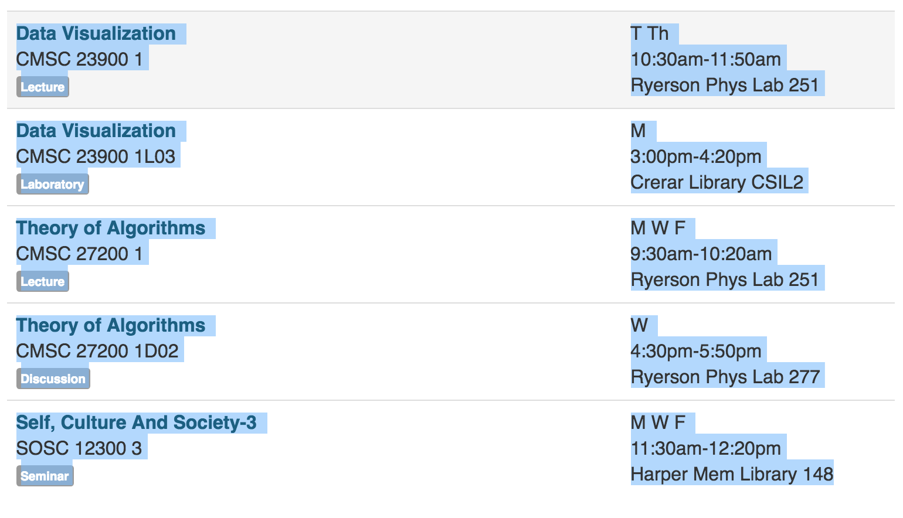

1. Go to my.uchicago.edu and log in. Copy your course schedule as shown below. 
2. Paste your schedule in the textbox below.
3. Enter the date of the Monday of the first week of the quarter.
4. Click "Add to Calendar"